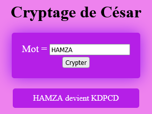

Le cryptage de césar est un cryptage par substitution où chaque lettre est remplacée par une autre.
A → D, B → E, C → F, etc.
HAMZA devient KDPCD ; ESS dvient HVV
Concevoir une page Web pour crypter un mot alphabétique majuscule en utilisant la méthode de césar.
